将问题带回家，白天又带着问题出门，我们都忘记了，原来是我们自己主动扔掉了救生圈。
——《超脱》

有些人，你总是难以走近他的世界。
而最难走近的不是那些不明事理的人，而是那些经历过苦难的「 懂事人」和「 坚强人」。
他们在童年经历过创伤和变故，在最应该表达需要、最敏感的年纪却“坚强”地压抑了自己。
他们把最深的想法和渴望深埋在心底，坚强地忍受着身边的一切，到最后，他们甚至丧失了敞开自己的能力。
这样的孩子长大后，看上去比同龄人要成熟很多，他们经历过痛苦，所以有更敏感的同理心，总是能够帮助和关心别人。
但是当他们自己受伤时，却拒绝和任何人敞开，他们会选择也习惯于自己孤独地舔舐着伤口，不让任何人看到。
今天要介绍的电影《超脱》，就将镜头对准了这些「 坚强人」的世界，它所揭示的苦痛可以说是普遍的，每个人都能够在里面看到自己的影子。
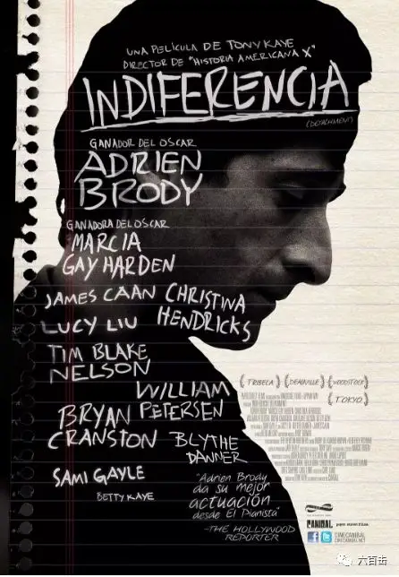
导演托尼·凯耶是一位低产高质的才子，样貌也非常特别。
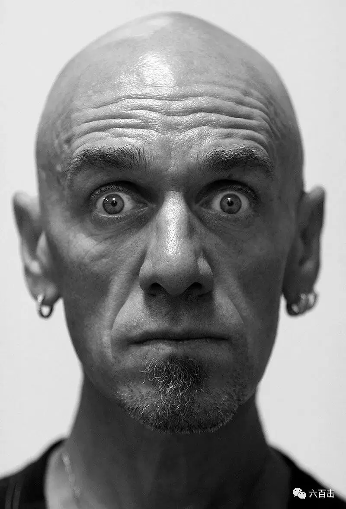
托尼·凯耶擅长拍摄纪录片，关注的都是边缘人和灰色地带，比如说反映堕胎的《地狱之火》。
到目前，他只有两部故事长片，但都是经典，一部是反映种族歧视的《美国X档案》，该片曾获奥斯卡提名，位列IMDB前一百。
另外一部，就是今天要介绍的《超脱》，豆瓣评分高达8.8，曾获东京国际电影节主竞赛单元特别贡献奖。
主演是奥斯卡影帝阿德里安·布劳迪，八字眉下那双深邃的双眼总是藏满了故事，他的形象非常契合故事主角的设定，这部电影也成为阿德里安在《钢琴家》之后的又一座高山。
电影的表现方式也非常特别，导演通过伪纪实、访谈与剧情相结合的方式去呈现主人公的内心世界，这种与观众独白式的情感交流使得松散的叙事更加耐人寻味。
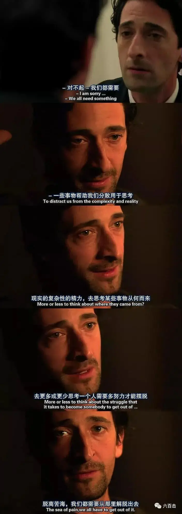
01 煎熬
由阿德里安扮演的亨利·巴赫特，是一个有着与学生进行某种情感交流天赋的老师，但是他却选择了埋藏这种天赋。
为了避免和学生或者是自己的同事产生什么"情感交流"，他选择了做一个代课老师，在每个学校都只呆很短的时间，然后就离开。
不久之后，他被委派到一所经营不善甚至面临倒闭的学校代课。
这所学校里的学生已经不能用叛逆来形容了，在很多老师的眼里，他们都是在作践自己。
他们说话离不开脏话，总是易怒暴动，甚至有的女生来学校不穿文胸。
这样的学生让满怀教学梦想的老师非常奔溃，当一位学生大大咧咧地告诉老师她将要退学时。
老师试图挽回她，对她百般劝导，甚至告诫她，如果自毁前程，那将来会更糟，但学生却告诉老师，她不在乎。
这让老师绝望，她歇斯底里地告诉那位学生：
一个人可以轻易地学会不在乎，但学习在乎却要付出百倍的努力和勇气。
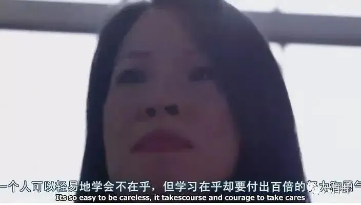
这些老师不仅仅面临学校里的煎熬，生活中也充满了无力和痛苦。
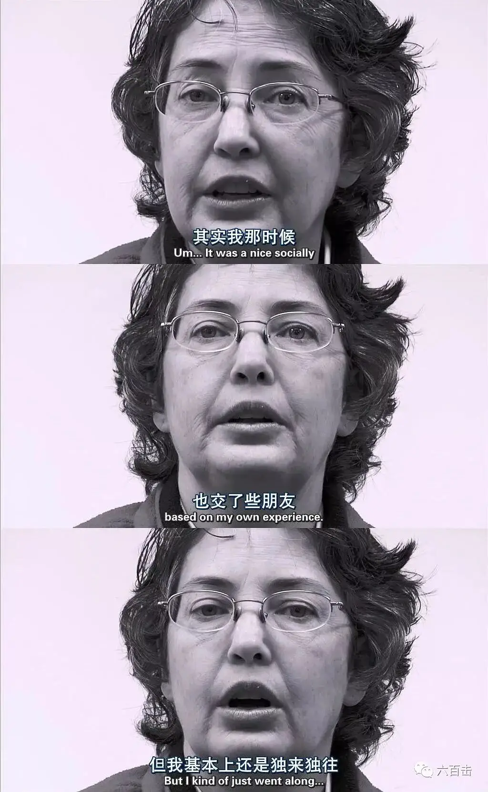
一位男老师拖着疲惫的身躯回到家中，迎接他的不是妻子的问候和美味的晚餐。
事实上，妻子一直盯着电视看，对他不闻不问，家里毫无生气，无奈之下，这位男老师只是喝了一口水呆坐在桌旁。
每天在校园里，总能够看到这位老师在手抓着铁网，很奇怪地看向远方，仿佛他置身于另外一个世界。
当亨利问他，“你还好么”。
他仿佛梦中惊醒，原来自己所处的煎熬世界是真的，这是一件多么恐怖的事情。
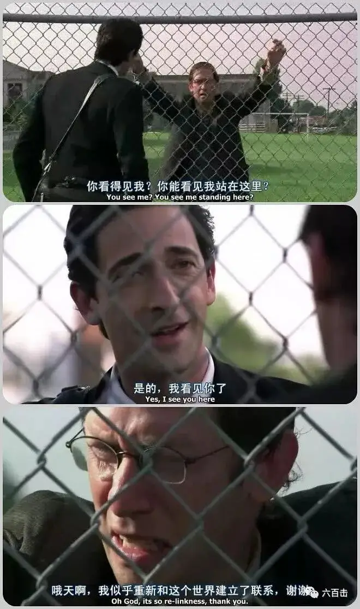
02 超脱
这样的环境对于亨利来说，似乎并不是什么大的问题，面对学生的谩骂和挑衅，亨利非常淡定。
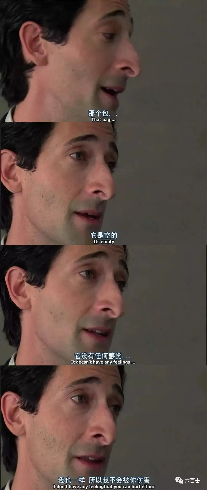
他充满悲悯，尊重每一个人，亨利逐渐受到了学生和其他老师的欢迎。
学生在他面前，像是一个透明人，亨利仿佛能够一眼看穿学生的心思，他明白，这些作践自己的学生只是选择了错误的方式去表达自己。
比如以虐杀小猫为乐的学生被亨利发现后，却无辜地告诉他：很多时候，他感觉自己就是那只被虐杀的小猫。
很多学生都是跟着家庭一起变得支离破碎，他们也都承受着难以摆脱的煎熬。
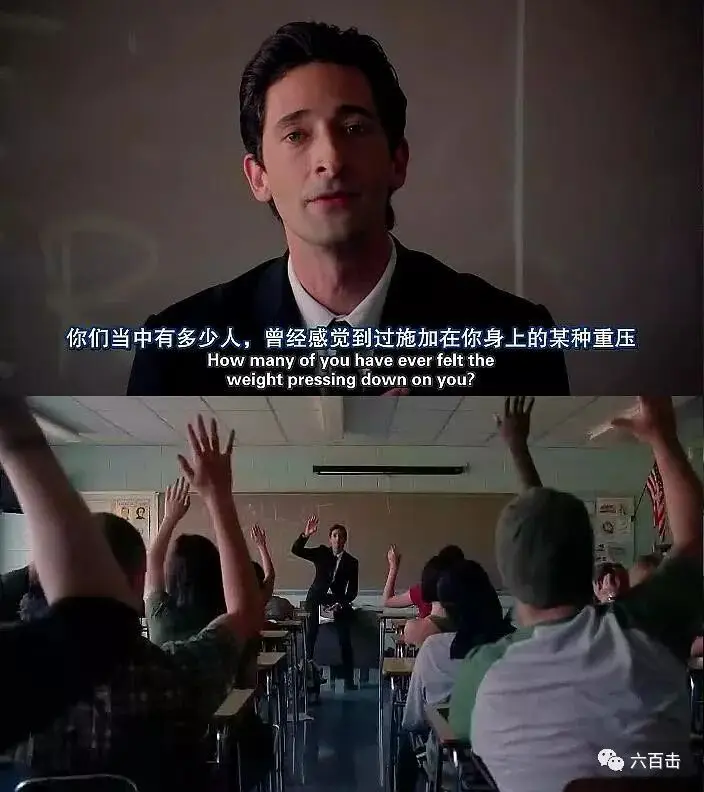
亨利在教学中引导这些学生，告诉他们，很多时候，大家的观念和思想被这个充满谎言的世界所欺骗。
这个世界告诉我们要变得漂亮、要看上去酷酷的才有价值。
这个世界告诉我们女人是下贱的，是天生的bitch。
可是这些都是谎言，亨利告诉大家：
为了保护我们的思想不受侵害，能够与侵入我们思想使我们日渐沉默的力量抗衡，我们必须学会阅读。以此来激活自身的想象力，去培养属于我们自己的意识和信仰，我们需要这些技能来保卫和维护自己的思想。
亨利的悲悯不仅仅给只用在学校里，面对偶遇的雏妓萨米，他竭力阻止她继续走向堕落，最后甚至收留了萨米，亨利成为了萨米唯一的亲人和希望。
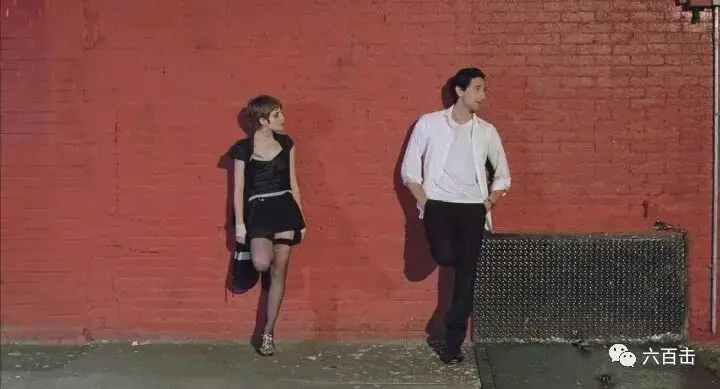
03 讽刺
就是这样一个帮助别人越过痛苦和迷茫的亨利，但却总是看上去很忧郁。
电影从始至终不断闪回亨利母亲的画面，观众会隐约觉察出发生在亨利身上的悲剧。
到最后，我们才知道，原来亨利的外公猥亵了自己的母亲，处于痛苦和煎熬的母亲最终吞食安眠药自杀。
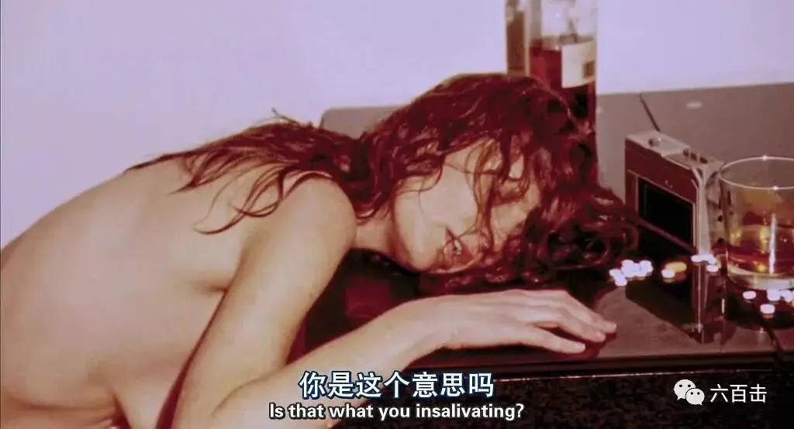
电影没有过多交代亨利的身世，始终没有提到亨利的父亲，甚至亨利有可能是母亲和外公所生。
这样的童年阴影如同梦魇一样伴随着亨利，这也就能很好地解释亨利两次突兀的发火。
第一次是外公将自己反锁在房间里，亨利朝着陪护工作人员发火，让人隐约觉得他和外公的关系异于常人。
第二次是亨利拥抱安慰一位女学生时，被一位女老师误解为特殊关系，对于这样的指责，亨利的爆发吓坏了在场的老师和学生。
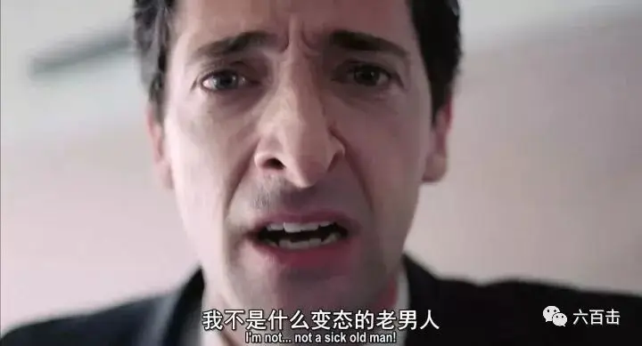
后面了解了亨利的遭遇，我们就会理解亨利为什么会如此愤怒，他痛恨外公的行为，更不会成为也不允许别人说他是“像外公一样的变态老男人”。
这件事是亨利深藏心底不愿面对的阴影，这片阴影也遮挡了亨利通向外界的道路。
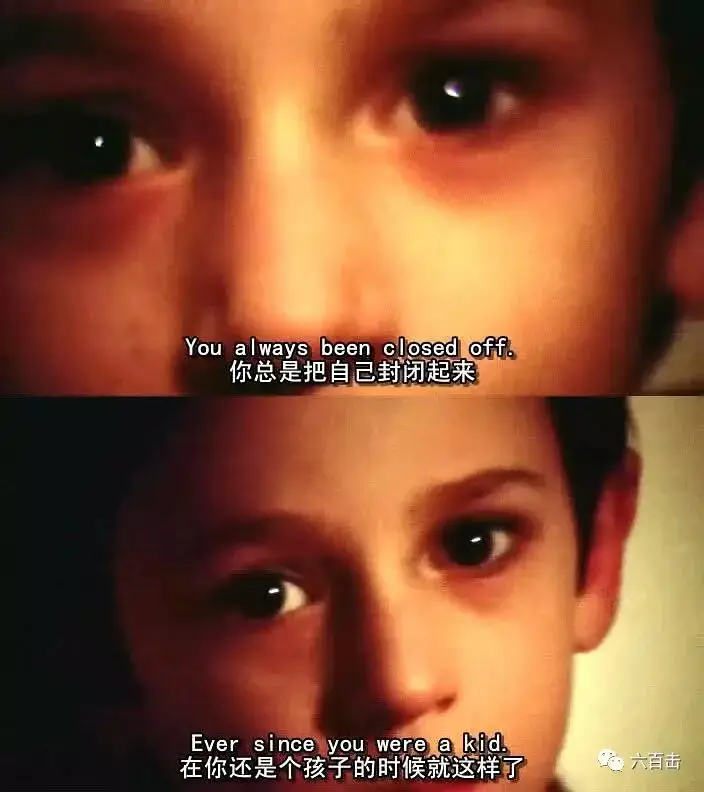
这份封闭像一面墙一样，别人走不进，自己也走不出去。
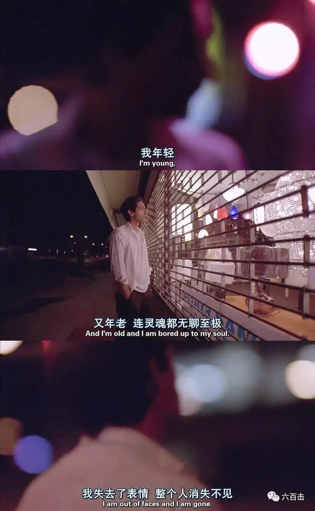
这注定亨利虽然可以很轻易地走近别人，但却永远无法深交。
所以当学生和雏妓萨米对亨利的依赖加剧的时候，亨利很本能地拒绝了进一步的投入和敞开。
他告诉雏妓萨米，她需要的东西他无法给予，并最后将萨米送到青少年收容所。
一个胖女孩向亨利寻求安慰和帮助，但也被亨利拒绝。
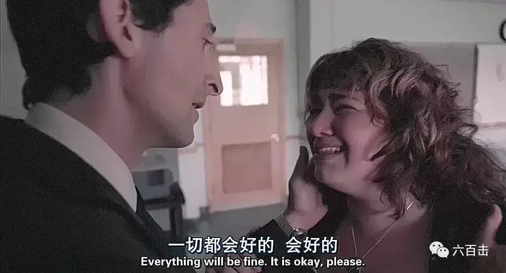
胖女孩因为肥胖从小遭到家人和同学的嫌弃和谩骂。
不过她颇具艺术才华，擅长摄影和绘画，但是作品如同她自己一样充满了悲伤。
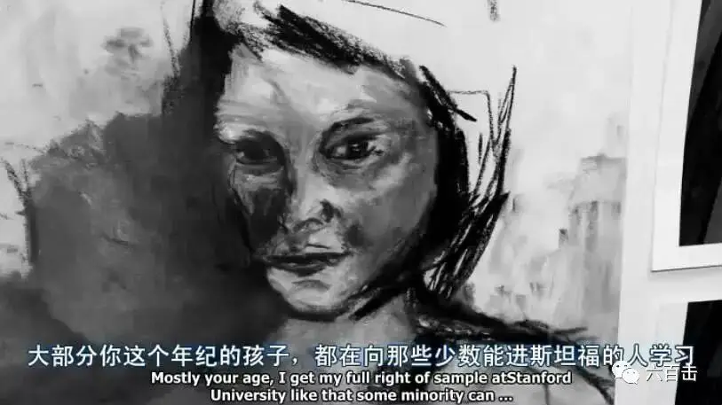
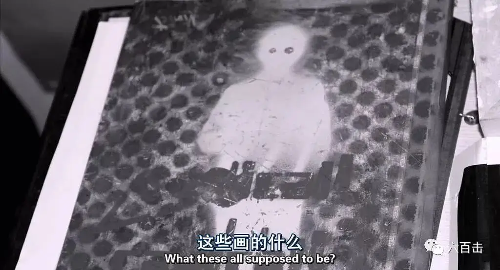
胖女孩对别人的情感也非常敏感，她觉察出亨利身上的落寞，并创作了一幅画送给亨利，可以说非常准确地表现了亨利教学时的状态。
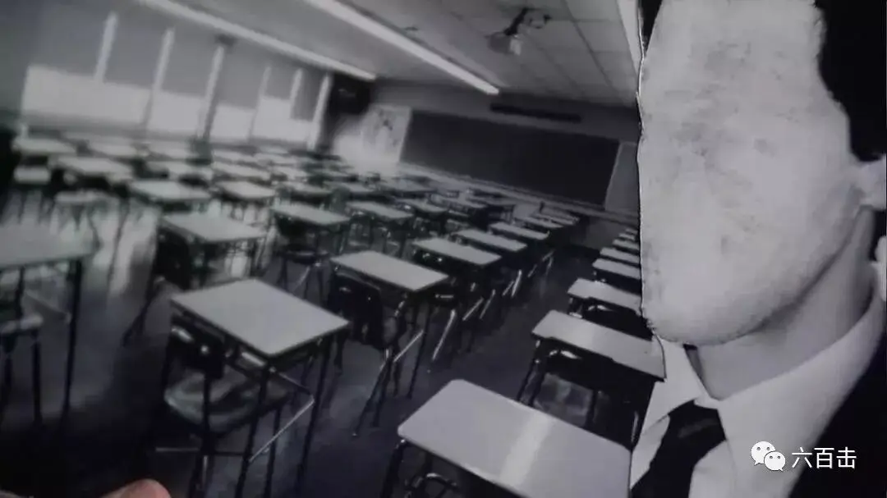
但是这样卓越的才华非但得不到父亲的欣赏，甚至更加招致父亲的谩骂。
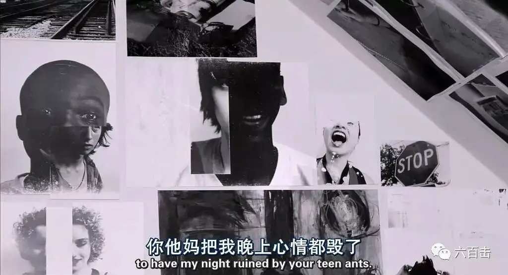
无助的胖女孩只能向亨利寻求慰藉和帮助，但是亨利拒绝继续走近她的世界和她的悲伤，胖女孩彻底绝望了。
当天，她做了可爱的蛋糕，将有笑脸的蛋糕送给了别人，却将装满毒药的悲伤蛋糕留给了自己。
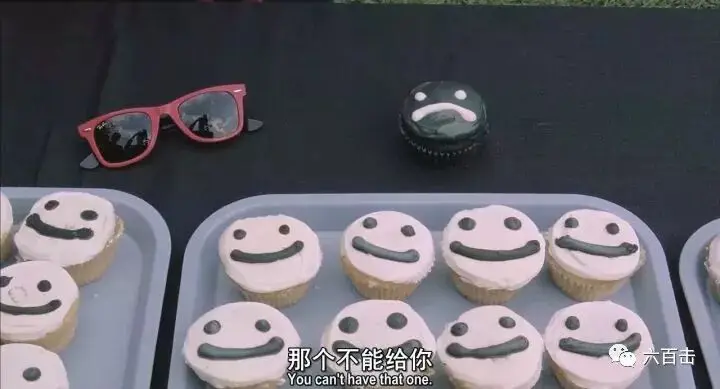
胖女孩选择了自杀，身旁留下了最后一幅作品。
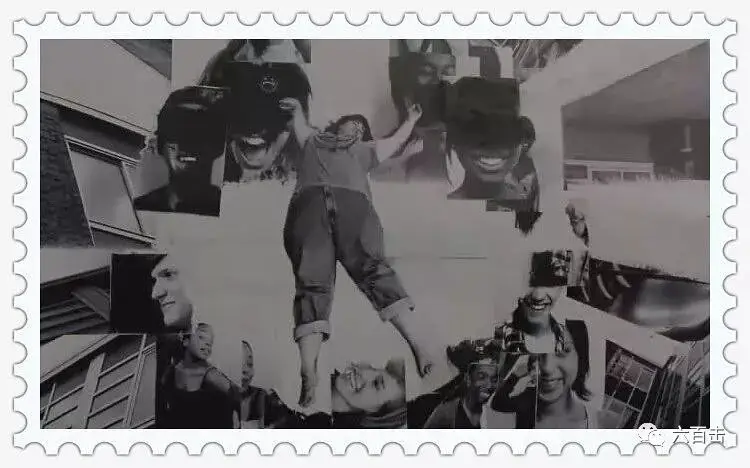
这让亨利非常难受，他的自闭竟然导致了一个年轻生命的失去。
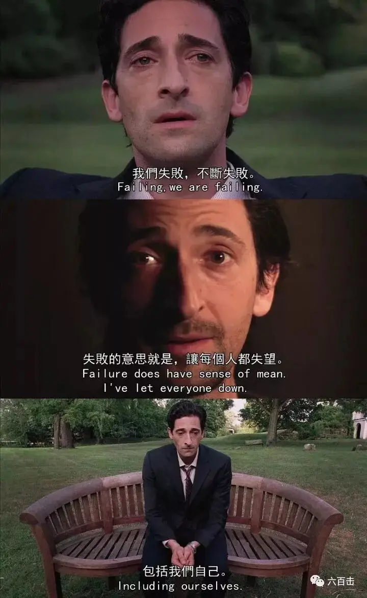
这件悲剧让亨利迈开了勇敢的一步，他来到收容所，拥抱了雏妓萨米。
电影的结局是开放的，我们不知道拥抱后，亨利有没有收养萨米，但至少给观众留下了希望。
电影最终以一个超现实的镜头结束。
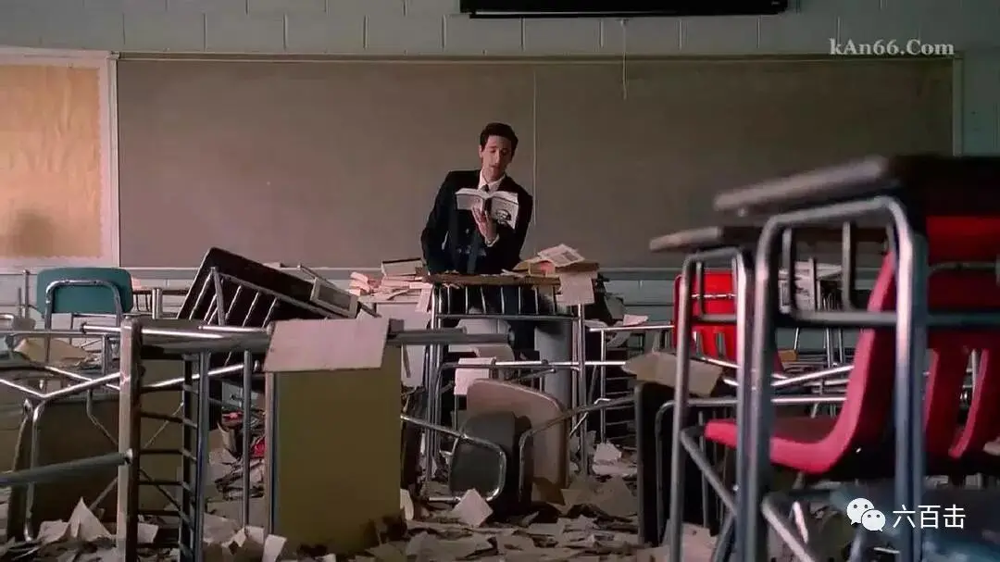
面对教室里的废墟，亨利读着爱伦·坡的《厄舍府的倒塌》：
滑动下方区域
查看完整内容
▼
During the whole of a dull,dark soundless day
在那年秋季枯燥，灰暗而瞑寂的某个长日里
In the autumn of that year, when the clouds hung oppressively low in heaven
沉重的云层低悬于天穹之上
I had been passing alone on the horse's back
我独自一人策马前行
Through the Singularly,dreary tract in the country
穿过这片阴沉的，异域般的乡间土地
and at length found myself, as the shades of the evening drew on
最终，当夜幕缓缓降临的时候
Within the view of melancholy House of Usher
厄舍府清冷的景色展现在我眼前
I know not how it was
我未曾目睹它过往的模样
But with the first glimpse of the building, a sense of insufferable gloom pervaded my spirit
但仅凭方才的一瞥，某种难以忍受的阴郁便浸透了我的内心
I looked upon the scene before me the simple landscape features of the domain
我望着宅邸周围稀疏的景物
Upon the bleak walls,upon the white trunks of decayed trees
围墙荒芜，衰败的树遍体透着白色
With the utter depression souls
我的灵魂失语了
There was an iciness
我的心在冷却
A sinking.
下沉
A sickening of the heart
显出疲软的病态
电影的名字叫做《超脱》，但是讽刺的是，看上去最超脱的亨利却是最难以超脱的人。
这份压抑也从侧面控诉了不负责任的家庭和父母。
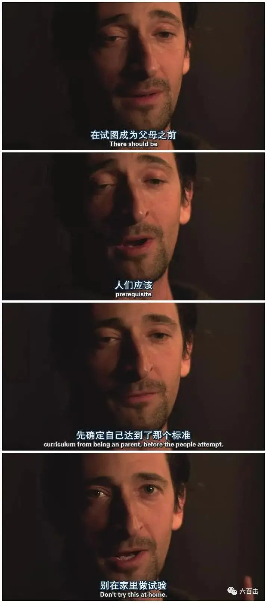
这也同样值得我们深思，对于高离婚率、道德伦丧的中国，未来会有更多“坚强”的“亨利”。
他们所需要的东西没有任何人能够给出，我们也无法从他们身上苛求更多的爱。
他们的痛苦任何人也没有办法去承载，甚至是他们自己，唯有仰望那爱的源头上帝。
面对他们，我们可以做的也许就是告诉他们：
凡劳苦担重担的人可以到我这里来，我就使你们得安息
——《圣经》
关注并回复：超脱
获取电影资源
相关推荐：
官方说法
100双绝望的眼睛
这里没有挑逗你眼目情欲的小鲜肉
也没有挑动你肉体情欲的段子
更没有膨胀你今生骄傲的鸡血
我们只在乎那些最质朴真诚的作品
在那里我们才能恢复真正的想象力
我们也坚信这才是我们真正需要的

ID:Six_hundred_hits
长按二维码，一键关注
【六百击】
-END-
电影评论
尽情分享朋友圈

苹果打赏通道